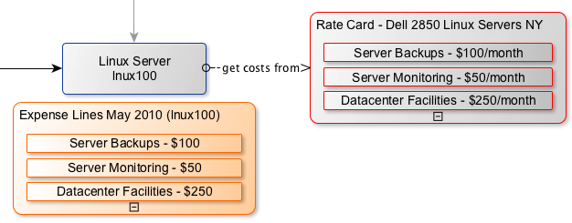

Legacy: Cost Management Demo Data
| |
Functionality described here requires the Cost Management plugin. This plugin requires the Spring 2010 release. |
| |
Warning: Fall 2010 Stable 2 introduces a lot more demo data so this guide will not match the latest demo data. We are working on an update guide for the latest release. |
Contents
1 Overview
The demo data provided with the Cost Management Plugin provides samples of the data types to illustrate its use. It is strongly recommended to install the demo data only in a development or test instance to prevent conflict with production data.
For a detailed overview diagram of the demo data, see Cost Aggregation Overview Diagram.
{kind=link}
2 Business Service Overview
The business service owner would like to know how much it costs to maintain the service on a monthly basis. This requires gathering the dependent CI costs and represent them at the business service level.
The demo data uses Bond Trading as an example of a Business Service whose expenses are being tracked. To view it, navigate to Financial Management > Business Services and select Bond Trading.
The Bond Trading business service tracks the recurring costs from the servers it uses. The business uses a few different server types, but each server type has the same costs regardless of how it's used. The Expense Lines related list shows each of the expense lines associated with Bond Trading.
The Bond Trading business service is also a component of the IT Services business service, so the owner of IT Services would also like the Bond Trading costs to be included in the overall cost of IT Services.
3 Defining CI Costs
The first step in generating the cost of the Business Service is to add the known costs for each CI.
This example will only use server-related costs. Since there are only a few different server models and the costs are the same for each model, CI Rate Cards can define a template of costs for each model. Review each of the rate cards.
The following is the Dell 2850 Linux Servers NY rate card:
{kind=link}
It represents the costs and CI in the NY data center running Linux on a Dell 2850 platform, regardless of what the server is used for. All rate cards and costs are currently disabled in the demo since sample expenses have already been generated.
The related lists contain information on how this rate card is used:
- The Configuration Items related list display the each of the servers that will use this rate card. There are 2 servers in this rate card.
- The Rate Card Costs related list display the recurring costs that all of the servers will incur, in this case on a monthly basis. For example, there is a cost for server backup services which cost $100/month. It currently has an end date of 2011-01-17. If this cost and rate card were active, it would generate monthly expense lines until that date.
4 Associating CIs to Business Services
The next step would be to define CMDB relationships to associate the servers that Bond Trading depends on, as well as the relationship with the IT Services business service. CMDB relationship maps are not required to track CI costs but they are required to aggregate dependent costs to parent CIs.
These CIs are already related in the demo data. This image shows the relationships that are important for this example.
{kind=link}
These relationships aggregate the server costs to the business services. Relationship Path records define which relationships are important when considering dependent cost.
Navigate to Financial Management > Relationship Paths to view the sample records:
{kind=link}
Since the system aggregates costs from the child to its parents, each relationship path record needs to start with a child CI class. Define which parent classes and relationship types are to be considered when pushing dependent costs to parents.
As shown in the dependency map above, there are Linux, Unix, Web Server, and Business Service children. The parents are all Business Services. All of the relationship types are "depends on".
There needs to be a relationship path for each child class used, all with parent of business service class and the depends on type. Also shown in the example is a way to enable all parent classes and relationship types from a given child class. This provides easier setup, but in most cases it isn't needed to use all parent relationships when aggregating costs.
Once relationship paths are defined, there is enough information to begin processing cost data.
5 Processing Costs and Aggregating Expenses
The plugin includes a scheduled job that can be enabled to run monthly to process CI rate cards. The demo data includes the results from processing the first 4 months of the year.
As shown in the Cost overview diagram, the flow of processing based on the CIs is shown in the dependency diagram. Here are the steps used during processing:
- Get the rate card costs that are active
- Get the list of configuration items for the rate card
- Generate an expense line for each cost and server combination
Here are the expense lines generated for one month of costs for the lnux100 Linux server: 
{kind=link}
{kind=link}
These are the direct expenses for this server.
Next, scheduled job checks for parent and relationship paths to see if the expenses should be aggregated. Since the relationship paths are already defined, review the results of one of the expenses for the lnux100 server:
{kind=link}
These are the direct expenses created for Datacenter facilities fees for $250.
Because this server has multiple parents, the expenses are split between them to prevent representing too much for an expense. Currently, the plugin only supports splitting the expense evenly across parents. This server has parents of Client Services and Bond Trading, so create an expense line of $125 for each. The aggregated expenses are identified with the inherited flag, they also list the original expense that they were generated from. The expense lines also show the CI rate card cost and description so it is clear what the expense is from.
The expense overview diagram displays the expense lines created for each item. The expenses in the dotted boxes are indirect expenses generated using the aggregation logic.
Filtering the list of expenses for the Bond Trading service for a given month now shows the total cost of operating the service for a month. The example shows both recurring CI costs from rate cards as well as a one-time type expense generated for a dependent server (apache linux ny 100).
{kind=link}
6 Allocating Expenses
Expenses can also be allocated to a business entity that is responsible for the expense. This is not considered charge-back or billing but could be used as a source for billing. The primary purpose of expense allocation is to represent the consumer of the process that has incurred some expense. This can be accomplished by defining expense allocation rules.
Navigate to Financial Management > Expense Allocation Rules and remove the Active = true breadcrumb. The demo data includes two allocation rules:
- Process Svc-CC Relationships defines how to allocate expenses based on subscribers of a business service. This will be reviewed later.
- Server-Department defines how to allocate expenses for servers. Since the inherited flag is set, it will allocate expenses with a source of cmdb_ci_server and all extended classes. This will allocate 100% of the expense to the department field defined in the server record.
If this rule were active and the lnux100 server had a department defined, it would generate an allocation for each expense. The allocation would be linked to the server's department.
{kind=link}
To demonstrate an example of allocation based on usage of a business service, first figure out who is using the service, how much much of the service they are using, and how much the service costs to operate per user.
This requires some new concepts around business services:
- 'Allocation units will define how many of a generic unit can a business service support. This will calculate a per unit cost from all of the aggregated expenses. In the demo data, the Bond Trading business service contains a total of 50 units, representing 50 user licenses:
{kind=link}
- Usage is tracked through a relationship between Cost Centers, which represent some business entity, and the business service they are consuming. Navigate to Financial Management > Cost Center and select the Trading cost center to find the CI Cost Center Relationships related list. This cost center is consuming 30 units of the bond trading service, which can be used to determine the percentage of the service's expense to allocate to the cost center:
{kind=link}
This diagram shows an overview of the two allocations rules. In the Process Svc-CC Relationship flow, there are two cost centers consuming bond trading. The Trading cost center is using 30 of the 50 total units and Finance is using 5 units. These percentages will be used to calculate the allocation amount. This rule is a scripted rule using internal functions to perform the calculations.
Reviewing the expense lines for bond trading shows that the total of the expenses for the month of April (processed on 2010-05-18) is $950. For 50 units of capacity, that would give a per unit cost of $19 for the month.
Based on the CI cost center relationship records, there should be the following allocations.
- Finance cost center using 5 of 50 units at $19/unit = $95
- Trading cost center using 30 of 50 units at $19/unit = $570
Don't total everything then create a single allocation. To find out where all of the expenses came from, split each expense on the business service and generate an allocation for each.
Here is the list of expense allocations for the month grouped by the target cost center. It verifies the total allocations calculated above.
{kind=link}
Note that only $665 of the total $950 of expenses have been allocated for the month. This is the amount of unallocated unit expenses from the 15 unallocated units). This can be considered IT overhead since you are not using the full capacity of the business service.
{kind=link}
There is a property that can be set to always allocate 100% of the expense regardless of usage. This option would calculate the allocation percentage based on the total number of allocated units instead of the total unit capacity.
For this example, allocate using the following calculations (numbers rounded):
- The per unit cost would now be $950/35 units = $27
- Finance cost center using 5 of the 35 allocated units at $27/unit = $136
- Trading cost center using 30 of 35 allocated units at $27/unit = $814
- Now, all of the $950 of monthly expenses is being allocated
This model would never result in unallocated expenses but the monthly allocations could vary greatly as the total number of allocated units changes, even though the unit consumption for a cost center may not change.
7 Budgets and Cost Centers
The most common business entity to associate financial information to is the cost center. The example above showed how cost centers can be allocated expenses based on service usage. This example will use that information to compare with a defined budget for the cost centers.
A budget is a placeholder for an amount of planned spending for one or more cost centers. Let's review the Investments 2010 budget.
{kind=link}
The budget shows a planned spending of $3000 for the 2010 calendar year. This number would usually come from the business financial system. There is one cost center that is a member of this budget, the trading cost center, which already has expense allocations. Some of the allocations are displayed in the related list. The total amount of expense allocations generated between the start and end dates of the budget are used to populate the actual budget amount, $2115. The application will update the remaining value amount whenever the planned or actual changes.
8 Cost Overview Dashboard
An overview of the demo data results can also be viewed in the Cost Management homepage.
{kind=link}
9 Distribution Costs
9.1 Sample costs
The demo data package contains two sample distribution costs with rules to demonstrate some possible uses.
San Diego Datacenter Power cost represents a power bill for a data center the should be distributed to all of the servers in that data center.
The San Diego Servers distribution rule is defined to distribute to servers (cmdb_ci_server) where the location is San Diego. The entire cost will be distributed evenly to all servers matching that condition.
User Desktop Support cost is an entry for $25,000 that needs to be distributed to all departments. In this example we would like to distribute unevenly, using the number of users in each department to identify the ratio of the distribution. The Department Head Count distribution rule uses a custom script to achieve the dynamic ratios. See Using Distribution Costs and Rules for more information on custom distribution scripts.
10 Task Rate Cards
There are three sample task rate cards included.
- Incident P1 - This is an example of a flat rate (per task) cost. Whenever an incident of critical priority is closed, an expense for $150 will be generated. This does not use task time worked records.
- Change Request (emergency) - This rate applies when an emergency type change request is closed. It is configured to use task time worked records to dynamically calculate the expense amount based on the amount of time worked on the task and possible user rates. If the users in the task time worked records does not have a labor rate card the task rate card is set to use a default labor rate of $250.
- Change Request (non-emergency) - This rate applies when an emergency type change request is closed. It is configured to use task time worked records to dynamically calculate the expense amount based on the amount of time worked on the task and possible user rates. If the users in the task time worked records does not have a labor rate card the task rate card is set to use a default labor rate of $175.
11 Labor Rate Cards
Two sample labor rate are included.
- Service Desk - for users performing task work that are a member of the IT department, an hourly rate of $75 will be used.
- Development - for users performing task work that are a member of the Development department, an hourly rate of $100 will be used.